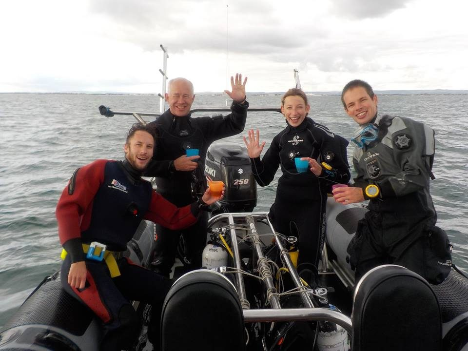
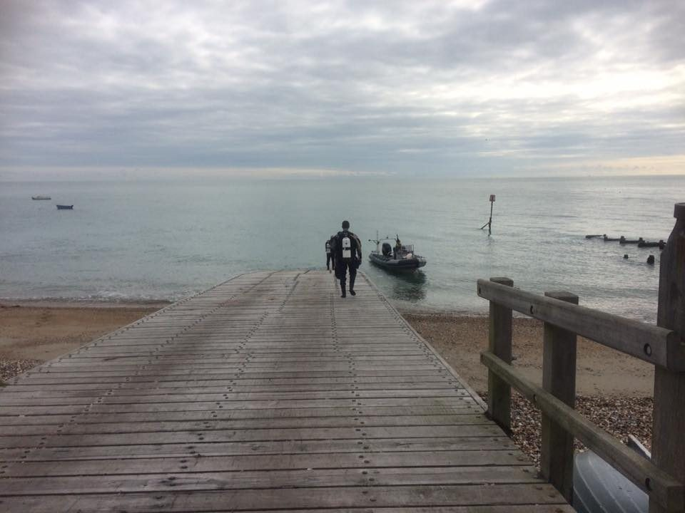
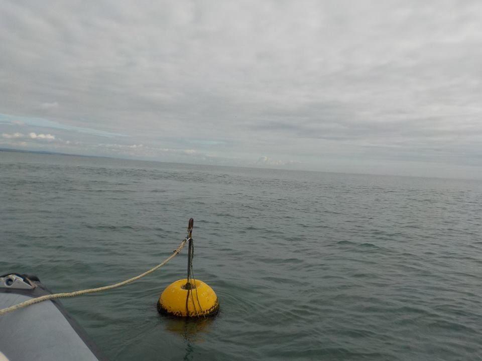
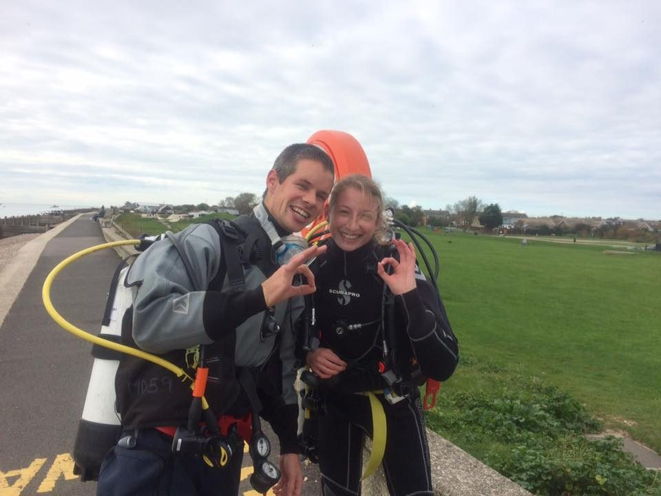

Selsey in October 2017
A select group of intrepid Argonauts sports divers (James B, Mark, Alex and Jessica) braved October weather for a really enjoyable day out with Mulberry Divers, off Selsey. We woke up very early (for a Sunday morning at least) and headed for the South coast. After signing our life away on various bits of paper we convened at the sea front for the all important bacon roll and coffee, before kitting up and heading out on the rib to the first dive site.

The Mulberry rib has a rather impressive engine and a very friendly skipper named Steve, who had a flask of hot Ribena waiting for us at the end of each dive. We were also lucky enough to have the boat all to ourselves – an Argonauts charter!

Wind over the previous days, large Spring tides and a HW slack all meant that the viz for our first dive, on the Far Mulberry was a rather murky 1-2m. This meant that we didn’t see an awful lot, I spotted a friendly looking Tompot Bleny and Alex caught a glimpse of a not so friendly looking Conga Eel. The weather on the surface however, was mostly blue sky and sunshine, so that was good for Rachel who was acting as our shore support (Rachel confirms that the cockles from the local fish monger are good!).

Things improved for our second dive at Waldrons Drift - better viz with the Ebb tide clearing the water slightly. We had a few nice sightings as well; quite a large Cat-Shark, Plaice. Long-Legged Spider Crab, Pollock, Dead Mans Fingers and big Edible Crabs all spotted.

All in all, a fun day out and a nice end to the 2017 UK dive season!
by Jess